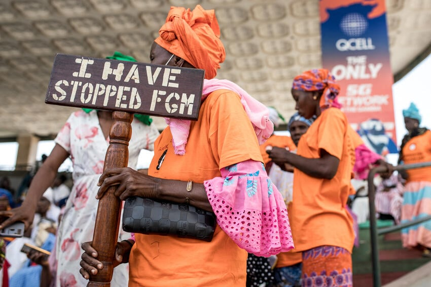

- If a "cutter" from abroad is coming to visit
- If your family is planning a long overseas holiday
- A ceremony of womanhood or preparation for marriage commences
What is FGM or Female Genitalial Mutation?
The mutiliation of female genitalial organs can be characterized by the complete removal of or partial cutting of external female gentialia for non-medical purposes. It is often performed to force women to keep their virginity until marriage, and it comes with a host of problems, including urinary issues, vaginal issues, complications during childbirth and worst of all, death.



What are the 4 types of FGM?
- A removal of some or all parts of the outside clitoris or removal of the clitoral hood
- Some removal of the clitoral glands and the labia minora
- Decreasing the vaginal opening's size by reassembling the labia majora or minora and >creating a seal
- All other harmful procedures that do not benefit the health of the affected party (i.e. burning, scraping, piercing, pricking)
What are signs that you or someone that you know are might be at risk of FGM

How can you tell that the mutiliation has taken place?
- Longer times spent in the washroom
- Apparent discomfort or difficulty when walking or sitting
- An unwillingness or intense discomfort associated with physical/medical examinations
- Suddenly becoming quite and withdrawn
Who do I contact if I learn of an FGM that has happened or that might happen?
In Canada, you should immediately contact the police and since FGM is most often subjected to children, you should contact at this phone number.